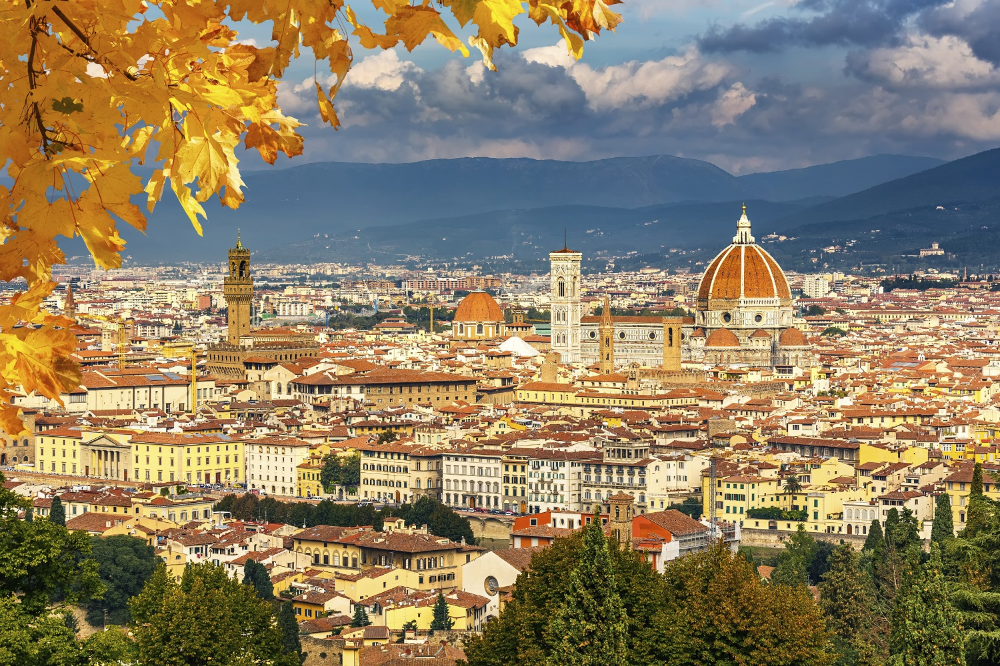
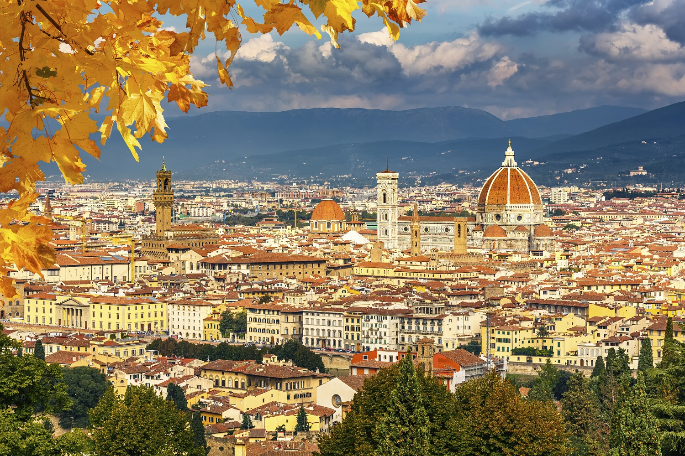
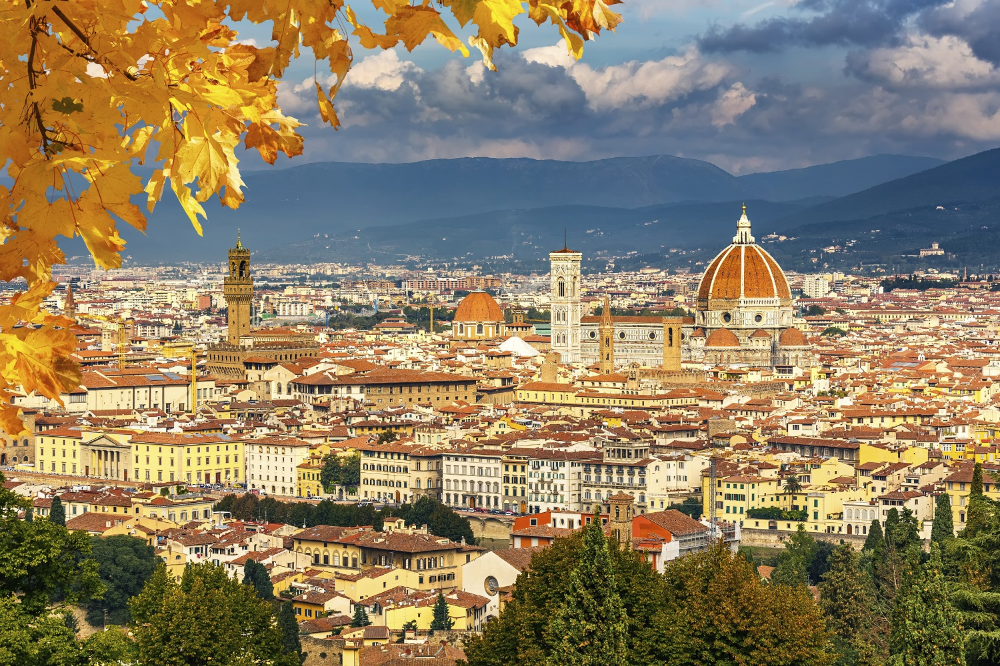
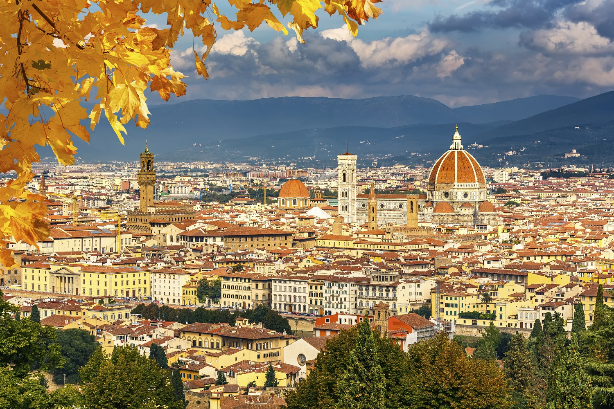

Florence est la huitième ville d'Italie par sa population, capitale de la région de Toscane et siège de la ville métropolitaine de Florence. Berceau de la Renaissance en Italie, capitale du royaume d'Italie entre 1865 et 1870, inscrit sur la liste du patrimoine mondial de l'UNESCO au titre du Centre historique de Florence, la ville présente une richesse artistique exceptionnelle (églises, musées, palais), et est devenue un grand centre touristique.
Florence a été fondée sous le nom latin de Florentia pendant l'époque romaine, en 59 av. J.-C., près du fleuve Arno. Elle n'a été qu'une simple bourgade jusqu'au xiie siècle, début de son essor économique et artistique qui dura jusqu'au xvie siècle. Du xiie au xive siècle, Florence connaît de profonds bouleversements politiques et sociaux avec l'essor des riches familles de marchands groupées au sein du popolo, et le conflit entre les guelfes et gibelins qui partage l'Italie et Florence en deux. Ces deux processus accompagnent le développement de la commune qui, comme dans les autres villes de l'Italie septentrionale, désigne l'émergence de gouvernements autonomes qui ont acquis leur souveraineté après une lutte féroce débouchant sur la paix de Constance, octroyée par l'empereur Frédéric Ier en 1183. Les communes italiennes y ont acquis des droits souverains qui en faisaient de véritables cités-États.
Florence a une économie diversifiée active surtout dans le secteur tertiaire. Important centre ferroviaire et routier, la ville est aussi le siège d’une activité industrielle mécanique (comme Selex Galileo, Beta Motor ou la Nuovo Pignone), chimique, pharmaceutique (le Groupe Menarini par exemple), le travail du cuir (Braccialini), de l’habillement (souvent dans le secteur du luxe, comme Roberto Cavalli, Gucci, Ermanno Scervino et Ferragamo), du mobilier. Il y a de nombreuses entreprises typographiques et éditoriales ainsi qu’un artisanat florentin, d’antique réputation, surtout dans le secteur mobilier (ébénisterie), de la porcelaine (Richard Ginori), de la carte décorée, du bronze et de l’orfèvrerie. Une ressource importante de la ville est le tourisme, avec à peu près 35 000 chambres d’hôtes et 23 000 emplacements hors hôtel (campings, locations de chambre ou gîtes). Le nombre annuel de nuitées s’élève à 10 millions, un tiers des touristes sont italiens, 20 % américains, 13 % allemands, 8 % japonais, 7,8 % anglais, 5,7 % français et 5 % espagnols. La Galerie des Offices reçoit 1 875 000 visiteurs, tandis que la Galleria dell'Accademia reçoit 1 200 000 visiteurs. La fréquentation de Florence liée aux congrès et aux foires s’est largement développée grâce au réaménagement au cours des années 1990 du centre des congrès3.
PLa cuisine florentine est caractérisée par quatre éléments fondamentaux : *le pain toscan *l'huile d'olive extra vierge *la viande *le vin de Chianti *Parmi les plats typiquement florentins : *bifteck à la florentine *soupe de pain à la florentine *lampredotto ou tripes à la florentine *pois à la florentine *la panzanella (salade à base de pain et de tomates) *cervelle à la florentine *purée à la florentine *le zuccotto (dessert, appelé en français "bombe glacée") *crêpes à la florentine.
Florence a une longue tradition de la mode. L'industrie de la haute couture est importante: la ville s'enorgueillit de maisons de mode célèbres telles Gucci, Salvatore Ferragamo, Enrico Coveri, Roberto Cavalli, Emilio Pucci, Patrizia Peppe, Conte of Florence, et beaucoup d'autres. La majorité de ces enseignes sont concentrées dans le secteur des commerces de luxe des Via Tornabuoni et Via della Vigna Nuova. C'est à Florence que s'est tenue en 1951 le premier défilé de haute couture italien, via dei Serragli. La ville abrite depuis cette date une série d'évènements de mode prestigieux : Pitti Imagine, qui se tient chaque année dans différents lieux de la cité. Parmi eux, le Pitti Uomo, né en 1972, est un salon international de mode masculine qui se tient deux fois par an: c'est l'un des plus importants rendez vous du monde. Tous les ans également se tient le Percorsi di Moda a Firenze, une série de visites guidées permettant de visiter les lieux de création et les produits liés à la mode à travers la ville. Enfin, Florence possède une importante école de mode, le Polimoda Istituto Internazionale Fashion Design & Marketing, ainsi que l'Accademia Italiana, située au palais Pitti, école de mode, graphique et design. Florence abrite l'unique musée italien dédié à la mode, la Galerie des Costumes (dans les jardins du palais Pitti), et depuis 1995, s'est installé le musée Salvatore Ferragamo dans le palais Spini Ferroni. La ville comprend également le musée Gucci, Piazza della Signoria à côté du Palazzo Vecchio. Il retrace l'histoire de la célèbre maison de luxe de sa création à nos jours.